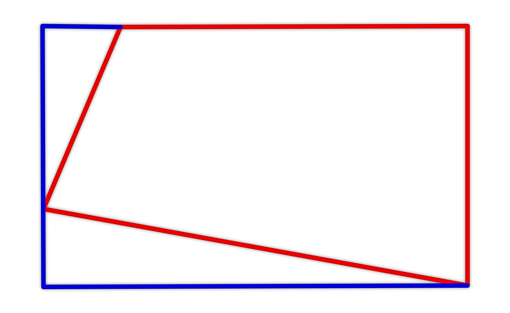

Je dán obdélník s délkami stran 9 cm a 12 cm, který je rozdělen pomocí dvou úseček na tři části (viz obrázek). Jedná se o dva pravoúhlé trojúhelníky a největší část je čtyřúhelník (červeně). Jeden z pravoúhlých trojúhelníků má délky odvěsen 3 cm a 4 cm. Druhý pravoúhlý trojúhelník má délky odvěsen 5 cm a 12 cm. Určete obvod a obsah uvedeného červeného čtyřúhelníku.
